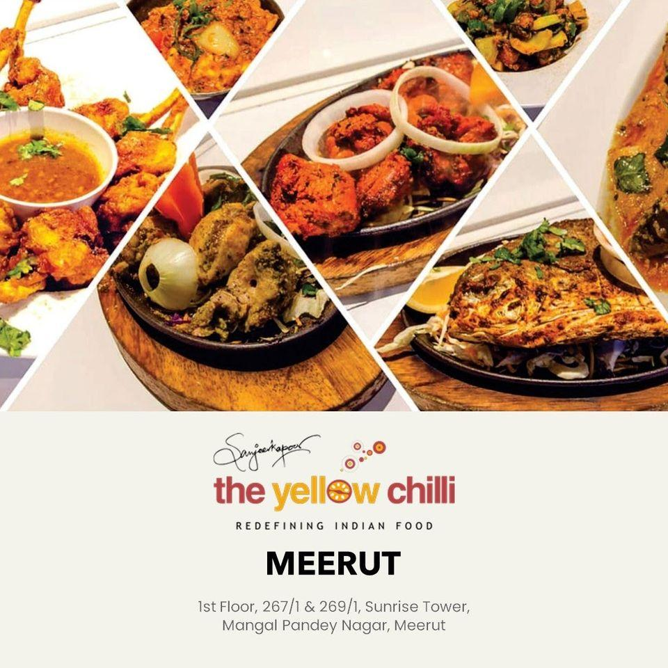
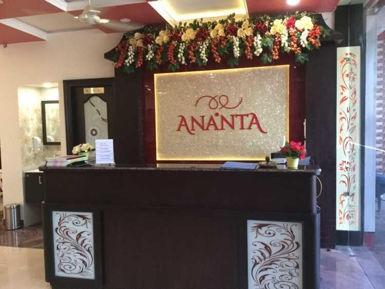
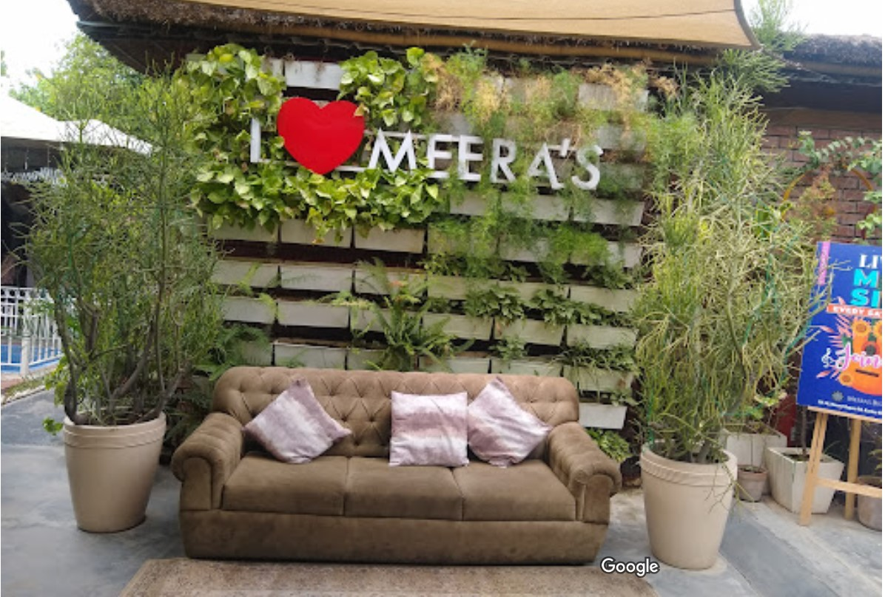
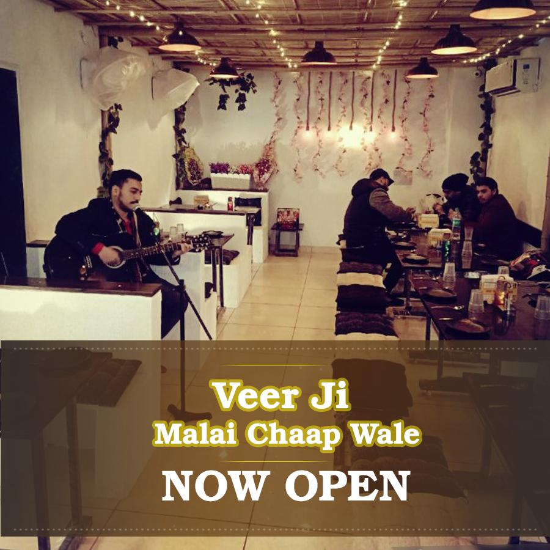
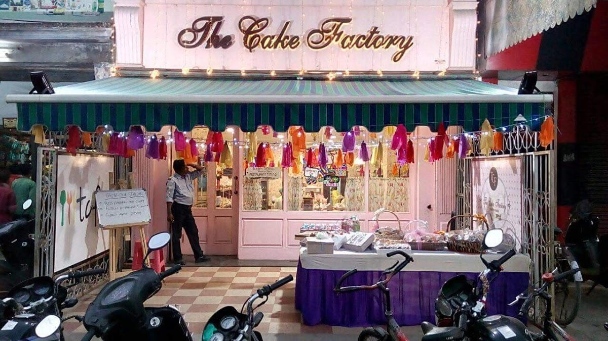
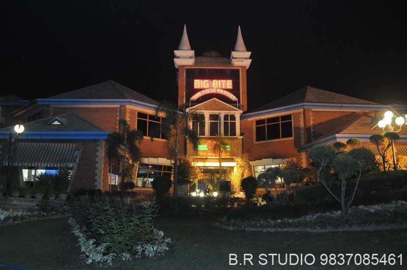
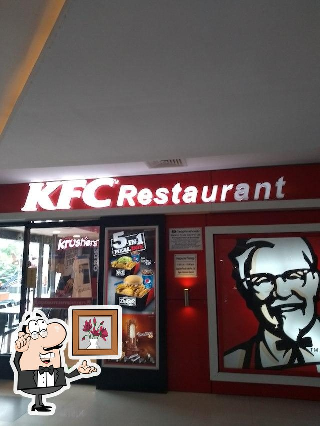

There are many famous Restaurants in Meerut which are very famous for there delicious food and premium dining experience.
So Lets Explore.
Chinese and Mughlai cuisines are must-taste ones at this restaurant. The recipe for
success of The Yellow Chilli is its good dal makhani, biryani and naan. Order and
taste tasty ice cream and make a post on Instagram. Delicious cordial is the best drinks of this place.
This spot is well known for its great service and friendly staff, that is always
ready to help you. Delicious meals at fair prices are provided here.
You will appreciate the fine decor and lovely ambiance of this restaurant. As for the Google rating, The Yellow Chilli received 4.1.

Click to get the location of yellow chilli
Come to this restaurant to dine at if you feel hungry after gazing at Mansa Devi Temple. Chinese and Vegetarian cuisines
under the direction of the popular chef are great here. The friendly staff reflects the style and character of Ananta. Spectacular service is
something visitors agree upon here.Adequate prices are to be expected at this place. Come here for the enjoyable ambiance. But this spot hasn't
received a high rating from Google users. Food is something which is the main attraction in Indian weddings and so does our team makes
sure that your guests have an amazing unforgettable experience.

Click to get the location of ananta restaurant
Enjoy nicely cooked spring rolls, chilli chicken and white sauce pasta this restaurant offers.
Here you will be offered tasty jalebi, sundaes and flija. Good cappuccino or delicious masala
chai are among the most often ordered drinks at Meera's Bistro Amoroso Cafe.
Food delivery is a big plus of this place. A number of guests find the staff well-trained.
This spot is notable for its prompt service. In accordance with the guests' opinions, prices
are attractive. You will certainly like the charming ambiance and terrific decor.
This restaurant is ranked 4.2 within the Google grading system.

Click to get the location of Meera's Bistro Amoroso Cafe
Search through the Indian and Vegetarian menu. Make a change from your traditional meal
and order good roti and perfectly cooked paneer at this restaurant. The pleasant staff
welcomes people all year round. The enjoyable service is a great plus of Veer Ji Malai
Chaap Wale - [ Meerut Cantt ]. As many visitors remark, the atmosphere is homey.
Based on the users' feedback on Google, this place deserved 4.4.The caterers take pleasure in presenting you
with a diverse menu that includes a variety of items that are an eclectic mix of Indian, Chinese and Continental cuisines.
All dishes are prepared-to-order using only the finest and freshest ingredients and are prepared under strict hygiene.

Click to get the location of Veer Ji Malai Chaap Wale
Nothing can be better than ordering perfectly cooked chocolate truffles, cupcakes and chocolate cakes.
Take your chance to taste great coffee. Food delivery is a big benefit of The Cake Factory Saket.
The staff is well-trained that's what makes this place so nice. Most people note that the service is enjoyable.
Good prices are something that should be said about this spot. Many reviewers say that the decor here is homey.
But guests rate The Cake Factory Saket below average on Google.

Click to get the location of The Cake Factory Saket
Carpe diem the Chinese cuisine waits for you. Most guests mark that the staff is knowledgeable at this restaurant.
Professional service is something visitors agree upon here.
You may be surprised by good prices at Big Bite Restaurant (Family Restaurant in Meerut).
But google users haven't given this place a high rating.
They can accommodate up to 200 guests and they aim to create an unforgettable
experience for you on your big day. This venue is perfect for simple & elegant wedding.

Click to get the location of Big Bite Restaurant
Nicely cooked grilled chicken have a good taste.Food delivery is an important advantage of this restaurant.
The good staff welcomes visitors all year round.
Terrific service is a strong point that plays a great role for the success of KFC.
This place scored 4.1 in the Google rating system.
They have enlisted decorators to
beautify the hall for the clients and enlisted DJ vendors too. Services for an additional charge:
photographer, Videographer, Cake, DJ, Fireworks, Live music.
Guests are allowed to bring own vendors: Photographer, Videographer, Cake, DJ, Fireworks, Live music.

Click to get the location of KFC